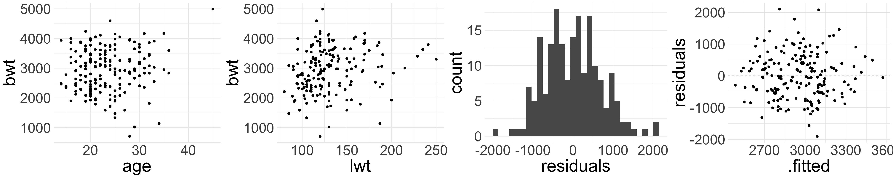

Introduction to Multiple Linear Regression
Housekeeping
- Study for midterm!
Birth weight data
Baystate Medical Center, Springfield, MA during 1986 on the birth weights of 189 babies, along with descriptive information about the mother
Want to understand risk factors for a baby’s birth weight (
bwt)Homework 8 explores the effect of mother’s
smokestatus on birth weight of babyLet’s look at a different variable:
raceof mother- Variable
racenumerical where 1 = white, 2 = black, 3 = other
- Variable
'data.frame': 189 obs. of 10 variables:
$ low : int 0 0 0 0 0 0 0 0 0 0 ...
$ age : int 19 33 20 21 18 21 22 17 29 26 ...
$ lwt : int 182 155 105 108 107 124 118 103 123 113 ...
$ race : int 2 3 1 1 1 3 1 3 1 1 ...
$ smoke: chr "no" "no" "yes" "yes" ...
$ ptl : int 0 0 0 0 0 0 0 0 0 0 ...
$ ht : int 0 0 0 0 0 0 0 0 0 0 ...
$ ui : int 1 0 0 1 1 0 0 0 0 0 ...
$ ftv : int 0 3 1 2 0 0 1 1 1 0 ...
$ bwt : int 2523 2551 2557 2594 2600 2622 2637 2637 2663 2665 ...Converting to factor
We need to convert variable race to categorical! Does not make sense to do “math” on variable:
birthwt2 <- birthwt |>
mutate(race = case_when(race == 1 ~ "white",
race == 2 ~ "black",
race == 3 ~ "other")) |>
mutate(race = factor(race, levels = c("white", "black", "other")))
str(birthwt2)'data.frame': 189 obs. of 10 variables:
$ low : int 0 0 0 0 0 0 0 0 0 0 ...
$ age : int 19 33 20 21 18 21 22 17 29 26 ...
$ lwt : int 182 155 105 108 107 124 118 103 123 113 ...
$ race : Factor w/ 3 levels "white","black",..: 2 3 1 1 1 3 1 3 1 1 ...
$ smoke: chr "no" "no" "yes" "yes" ...
$ ptl : int 0 0 0 0 0 0 0 0 0 0 ...
$ ht : int 0 0 0 0 0 0 0 0 0 0 ...
$ ui : int 1 0 0 1 1 0 0 0 0 0 ...
$ ftv : int 0 3 1 2 0 0 1 1 1 0 ...
$ bwt : int 2523 2551 2557 2594 2600 2622 2637 2637 2663 2665 ...Fit model
bwt_lm <- lm(bwt ~ race, data = birthwt2)
tidy(bwt_lm)| term | estimate | std.error | statistic | p.value |
|---|---|---|---|---|
| (Intercept) | 3102.7188 | 72.92298 | 42.547890 | 0.0000000 |
| raceblack | -383.0264 | 157.96382 | -2.424773 | 0.0162741 |
| raceother | -297.4352 | 113.74198 | -2.614999 | 0.0096546 |
Fitted model:
\[ \widehat{\text{birth_wt}} = 3102.72 -383.03 \text{raceBlack} -297.44 \text{raceOther} \]
\[\text{raceBlack} = \begin{cases}1 & \text{if race = Black} \\ 0 & \text{otherwise} \end{cases} \qquad \text{raceOther} = \begin{cases}1 & \text{if race = Other} \\ 0 & \text{otherwise} \end{cases}\]
Estimate the birth weight for babies whose mothers are White
Interpreting coefficients
\[ \widehat{\text{birth_wt}} = 3102.72 + -383.03 \text{raceBlack} + -297.44 \text{raceOther} \]
\(\widehat{\text{birth_wt}} = 3102.72 -383.03 \times \color{orange}{0} -297.44 \times \color{orange}{0}\)
The estimated birth weight of babies whose mothers are White is 3102.72 grams
More generally: \(b_{0}\) is the estimated value of the response variable for the base level
What is the interpretation of \(b_{1}\) = -383.03? Of \(b_{2}\) = -297.44?
Babies whose mothers are Black have an estimated birth weight about 383.03 grams less than babies whose mothers are White
Babies whose mothers are race “Other” (i.e. not Black or White) have an estimated birth weight about 297.44 grams less than babies whose mothers are White
General interpretation
| term | estimate | std.error | statistic | p.value |
|---|---|---|---|---|
| (Intercept) | 3102.7188 | 72.92298 | 42.547890 | 0.0000000 |
| raceblack | -383.0264 | 157.96382 | -2.424773 | 0.0162741 |
| raceother | -297.4352 | 113.74198 | -2.614999 | 0.0096546 |
When fitting a regression model with a categorical variable with \(k > 2\) levels, the software will always provide a coefficient for \(k-1\) of the levels
The base level does not receive a coefficient
- Interpretation of the coefficient associated with a non-base level is the expected change in the response relative to the base level
Note: the fitted model has more than one “slope” coefficient, but the
racevariable is still a single explanatory variableWhat happens if we explicitly want to include more than one explanatory variable?
Multiple linear regression
Multiple linear regression
We have seen simple linear regression, where we had one explanatory variable
Extend to include multiple explanatory variables
- Seems natural: usually several factors affect behavior of phenomena
Multiple linear regression takes the form: \[y = \beta_{0} + \beta_{1} x_{1} + \beta_{2} x_{2} + \ldots + \beta_{p} x_{p} + \epsilon\]
Now there are \(p\) different explanatory variables \(x_{1},\ldots, x_{p}\) per observation
Still one response \(y\) and error \(\epsilon\) per observation
Represents a holistic approach for modeling all of the variables simultaneously
Birthweight data (cont.)
Suppose we would also like to include the mother’s age (age) and weight at last period (lwt) into the model:
\[\text{birth_wt} = \beta_{0} + \beta_{1} \text{raceBlack} + \beta_{2} \text{raceOther} + \beta_{3} \text{age} + \beta_4 \text{lwt} + \epsilon\]
- Just as in the case of SLR, the estimates of \(\beta_{0},\ldots, \beta_{4}\) parameters are chosen via the squared deviation criterion
Multiple regression in R
Very easy to code:
bwt_mlr <- lm(bwt ~ race + age + lwt, data = birthwt2)| term | estimate | std.error | statistic | p.value |
|---|---|---|---|---|
| (Intercept) | 2461.147482 | 314.722327 | 7.8200600 | 0.0000000 |
| raceblack | -447.614691 | 161.369310 | -2.7738527 | 0.0061108 |
| raceother | -239.356515 | 115.188920 | -2.0779474 | 0.0391022 |
| age | 1.298831 | 10.107701 | 0.1284991 | 0.8978943 |
| lwt | 4.619545 | 1.787729 | 2.5840294 | 0.0105407 |
- Simply identify the estimated coefficients from the output to obtain fitted model
\[ \begin{align*} \widehat{\text{birth_wt}} &= 2461.15 -447.61 \text{raceBlack} -239.36 \text{raceOther} + 1.3 \text{age} \\ & \quad + 4.62 \text{lwt} \end{align*} \]
- Note that the number of explanatory variables need not equal the number of parameters in the model!
Interpretation
When we have more than one predictor variable, interpretation of the coefficients requires a bit of care
- Multiple moving parts
Interpretation of a particular coefficient \(b_{m}\) relies on “holding the other variables fixed/constant” (assuming the model is appropriate)
\[ \begin{align*} \widehat{\text{birth_wt}} &= 2461.15 -447.61 \text{raceBlack} -239.36 \text{raceOther} + \color{orange}{1.3} \text{age} \\ & \quad + 4.62 \text{lwt} \end{align*} \]
For every one year older the mother is, the baby’s birth weight is expected to increase by \(\color{orange}{1.3}\) grams, holding all other variables constant
Interpret the coefficient associated with the mother’s weight (
lwt)
Interpretation (cont.)
\[ \begin{align*} \widehat{\text{birth_wt}} &= 2461.15 -447.61 \text{raceBlack} -239.36 \text{raceOther} + 1.3 \text{age} \\ & \quad + \color{orange}{4.62} \text{lwt} \end{align*} \]
- For every one pound heavier the mother’s weight at last period was, the baby’s birth weight is expected to increase by \(\color{orange}{4.62}\) grams, holding all other variables constant
More isn’t always better
You might be tempted to throw in all available predictors into your model! Don’t fall into temptation!
Quality over quantity
For SLR, we used the coefficient of determination \(R^2\) to assess how good the model was
\(R^2\) is less helpful when there are many variables
Why? The \(R^2\) will never decrease (and will almost always increase) when we include an additional predictor
Adjusted \(R^2\)
For multiple linear regression, we use the adjusted \(R^2\) to assess the quality of model fit
“Adjusted” for the presence of additional predictors
Take STAT 211 to learn the formula and intuition behind it!
Adjusted \(R^2\) is always less than \(R^2\)
Adjusted \(R^2\) (cont.)
summary(bwt_mlr)
Call:
lm(formula = bwt ~ race + age + lwt, data = birthwt2)
Residuals:
Min 1Q Median 3Q Max
-2103.50 -429.68 41.74 486.10 1902.20
Coefficients:
Estimate Std. Error t value Pr(>|t|)
(Intercept) 2461.147 314.722 7.820 3.97e-13 ***
raceblack -447.615 161.369 -2.774 0.00611 **
raceother -239.357 115.189 -2.078 0.03910 *
age 1.299 10.108 0.128 0.89789
lwt 4.620 1.788 2.584 0.01054 *
---
Signif. codes: 0 '***' 0.001 '**' 0.01 '*' 0.05 '.' 0.1 ' ' 1
Residual standard error: 704.9 on 184 degrees of freedom
Multiple R-squared: 0.08536, Adjusted R-squared: 0.06548
F-statistic: 4.293 on 4 and 184 DF, p-value: 0.00241glance(bwt_mlr)| r.squared | adj.r.squared | sigma | statistic | p.value | df | logLik | AIC | BIC | deviance | df.residual | nobs |
|---|---|---|---|---|---|---|---|---|---|---|---|
| 0.0854 | 0.0655 | 704.9368 | 4.293 | 0.0024 | 4 | -1505.128 | 3022.256 | 3041.707 | 91436202 | 184 | 189 |
Conditions for inference
We still need LINE to hold
Linearity: harder to assess now that multiple predictors are involved. Good idea to make several scatter plots
Independence: same as before
Nearly normal residuals: same as before
Equal variance: residual plot has fitted values on the x-axis, instead of an explanatory variable
`stat_bin()` using `bins = 30`. Pick better value with `binwidth`.
Inference in MLR
Hypothesis testing in MLR
In MLR, we are interested in the effect of a variable \(m\) on the response \(y\).
- Need to account for presence of other predictors in the model
\(H_{0}: \beta_m = 0\), given other predictors in the model
\(H_{A}: \beta_m \neq 0\), given other predictors in the model (or \(>, <\))
We can write down one null hypothesis for each coefficient in the model
Hypothesis tests from lm()
Returning to the larger model:
\[\text{birth_wt} = \beta_{0} + \beta_{1} \text{raceBlack} + \beta_{2} \text{raceOther} + \beta_{3} \text{age} + \beta_4 \text{lwt} + \epsilon\]
We can test the following null hypotheses (no need to write down):
- \(H_{0}: \beta_{1} = 0\), given
ageandlwtare included in the model - \(H_{0}: \beta_{2} = 0\), given
ageandlwtare included in the model - \(H_{0}: \beta_{3} = 0\), given
raceandlwtare included in the model - \(H_{0}: \beta_{4} = 0\), given
raceandageare included in the model
- \(H_{0}: \beta_{1} = 0\), given
Hypothesis tests from lm()
| term | estimate | std.error | statistic | p.value |
|---|---|---|---|---|
| (Intercept) | 2461.1475 | 314.7223 | 7.8201 | 0.0000 |
| raceblack | -447.6147 | 161.3693 | -2.7739 | 0.0061 |
| raceother | -239.3565 | 115.1889 | -2.0779 | 0.0391 |
| age | 1.2988 | 10.1077 | 0.1285 | 0.8979 |
| lwt | 4.6195 | 1.7877 | 2.5840 | 0.0105 |
Output from
lm()provides:Test statistic, which follows \(t_{n-p}\) where \(p =\) total number of unknown parameters (i.e. \(\beta\) terms)
p-values for testing two-sided \(H_{A}\) provided
Based on the model fit, which variables seem to be important predictors of birth weight of a baby? Why?
Hypothesis tests from lm() (cont.)
| term | estimate | std.error | statistic | p.value |
|---|---|---|---|---|
| (Intercept) | 2461.1475 | 314.7223 | 7.8201 | 0.0000 |
| raceblack | -447.6147 | 161.3693 | -2.7739 | 0.0061 |
| raceother | -239.3565 | 115.1889 | -2.0779 | 0.0391 |
| age | 1.2988 | 10.1077 | 0.1285 | 0.8979 |
| lwt | 4.6195 | 1.7877 | 2.5840 | 0.0105 |
lwtdoes seem to be an important predictor for birth weight, despite inclusion ofraceandagein the model- Low p-value suggests it would be extremely unlikely to see data that produce \(b_{4} = 4.62\) if the true relationship between
lwtandbwtwas non-existent (i.e., if \(\beta_{4} = 0\)) and the model also includedageandrace
- Low p-value suggests it would be extremely unlikely to see data that produce \(b_{4} = 4.62\) if the true relationship between
racedoes seem to be an important predictor, despite inclusion ofageandlwtagedoes not seem to be an important predictor after includingraceandlwt
Simpler model
Let’s see the model that does not include mother’s age in the model:
bwt_mlr_no_age <- lm(bwt ~ race + lwt, data = birthwt2)
tidy(bwt_mlr_no_age)| term | estimate | std.error | statistic | p.value |
|---|---|---|---|---|
| (Intercept) | 2486.9039 | 241.9933 | 10.2767 | 0.0000 |
| raceblack | -451.8381 | 157.5662 | -2.8676 | 0.0046 |
| raceother | -241.3008 | 113.8869 | -2.1188 | 0.0354 |
| lwt | 4.6634 | 1.7501 | 2.6646 | 0.0084 |
Write out the fitted model. Interpret the intercept and the coefficient for lwt in context
Simpler model (cont.)
| term | estimate | std.error | statistic | p.value |
|---|---|---|---|---|
| (Intercept) | 2486.9039 | 241.9933 | 10.2767 | 0.0000 |
| raceblack | -451.8381 | 157.5662 | -2.8676 | 0.0046 |
| raceother | -241.3008 | 113.8869 | -2.1188 | 0.0354 |
| lwt | 4.6634 | 1.7501 | 2.6646 | 0.0084 |
Intercept: the birth weight of babies whose mothers are White and weigh 0 lbs have an estimated birth weight of 2486.9 grams
Coefficient for
lwt: for every one pound increase in the mother’s weight at last period, the birth weight of the baby is expected to increase by 4.66 grams, holding all other variables (i.e.race) constant
Comparing models
Let’s compare the model that includes age to the model without age:
tidy(bwt_mlr) |>
select(term, estimate, p.value)| term | estimate | p.value |
|---|---|---|
| (Intercept) | 2461.1475 | 0.0000 |
| raceblack | -447.6147 | 0.0061 |
| raceother | -239.3565 | 0.0391 |
| age | 1.2988 | 0.8979 |
| lwt | 4.6195 | 0.0105 |
glance(bwt_mlr)| r.squared | adj.r.squared | sigma | statistic | p.value | df | logLik | AIC | BIC | deviance | df.residual | nobs |
|---|---|---|---|---|---|---|---|---|---|---|---|
| 0.0854 | 0.0655 | 704.9368 | 4.293 | 0.0024 | 4 | -1505.128 | 3022.256 | 3041.707 | 91436202 | 184 | 189 |
tidy(bwt_mlr_no_age) |>
select(term, estimate, p.value)| term | estimate | p.value |
|---|---|---|
| (Intercept) | 2486.9039 | 0.0000 |
| raceblack | -451.8381 | 0.0046 |
| raceother | -241.3008 | 0.0354 |
| lwt | 4.6634 | 0.0084 |
glance(bwt_mlr_no_age)| r.squared | adj.r.squared | sigma | statistic | p.value | df | logLik | AIC | BIC | deviance | df.residual | nobs |
|---|---|---|---|---|---|---|---|---|---|---|---|
| 0.0853 | 0.0704 | 703.0605 | 5.7491 | 9e-04 | 3 | -1505.137 | 3020.273 | 3036.482 | 91444408 | 185 | 189 |
What do you notice about the estimated coefficients, \(R^2\), and adjusted \(R^2\)?
Remarks
We have only scratched the surface of MLR
Things to consider:
Multicollinearity (when the predictor variables are correlated with each other)
Model selection
More than one categorical variable
Interaction effects